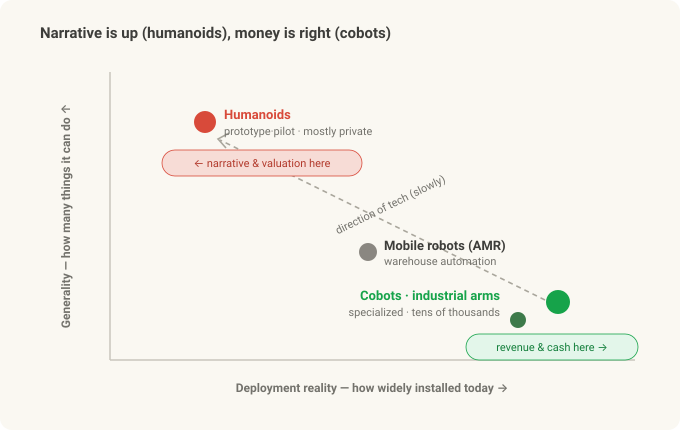
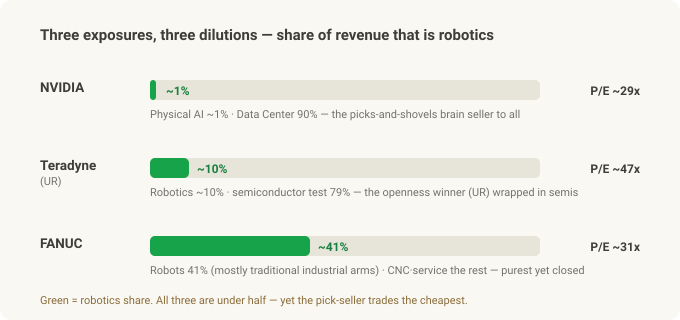
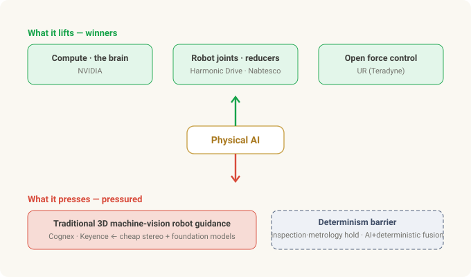
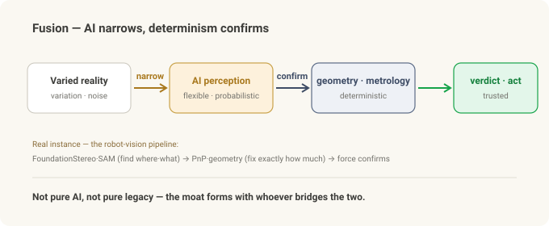

Investing in Physical AI — There's No Pure-Play, and the Value Is Moving¶
Cobot series · Part 3 of 3 (finale). Part 1 was what a cobot is; Part 2 split UR vs FANUC on "openness." Now we connect it to investing — if Physical AI is real, how do we buy it?
Suppose the first two parts convinced you Physical AI is real. AI becomes the robot's eyes and hands (the Robot Vision series), and what decides the contest isn't specs but openness (Part 2).
Then the natural next question: "So — where do I invest?"
Bad news first. There's no clean stock to buy. The names that come up when you search "Physical AI pure-play" — NVIDIA, Teradyne, FANUC — are all diluted exposure in different ways. And the good news: that's why this piece asks not "which stock" but "where does value move?" Drawing that map is the better trade.
In 30 seconds¶
- The narrative is humanoids; the money is cobots. When people say Physical AI they picture a robot that walks like a person — but those are mostly prototypes and pilots, and mostly private. The actual revenue comes from the cobots and industrial arms already installed by the tens of thousands.
- No pure-play. No US large-cap sells "just cobots" or "just Physical AI." The closest are small (Korea's Doosan Robotics) or Chinese (humanoid makers UBTech and Unitree) — and the one that was supposed to become a ticker, ABB's robotics spin-off, was sold to SoftBank instead of listing.
- Three flavors of dilution. NVIDIA = the picks-and-shovels seller of brains to everyone (but Physical AI is ~1% of revenue, 90% is Data Center). Teradyne = the openness winner via UR (but ~10% of revenue; 79% is semiconductor test). FANUC = the purest automation name (but robots are 41% and mostly traditional industrial arms; China-cyclical).
- A valuation twist. On earnings (P/E), NVDA is the cheapest of the three (~29x), and the cobot owner, TER, is the most expensive (~47x). The pick-seller trades cheaper than the miner.
- Value is moving. Physical AI lifts one side (compute, robot-joint reducers, open force control) and presses another (the robot-guidance premium of traditional 3D machine vision).
- The real moat = fusion. AI is non-deterministic; industrial inspection is deterministic. Whoever bridges the two wins — not the pure-AI player, not the pure-legacy incumbent.
- This is a viewpoint, not stock advice. Please read the disclosure at the bottom.
The narrative is humanoids; the money is cobots¶
Before the investing, set the board. "Physical AI" makes people overlay two different pictures:
- Humanoids — two legs, two arms, do-anything. The general-purpose dream: "just drop it into a human's spot."
- Cobots / industrial arms — one arm bolted to a table, repeating one task precisely in one place.
They're at completely different maturities.
| Cobot (collaborative robot) | Humanoid | |
|---|---|---|
| Form | fixed base + one arm | two legs + two arms, whole body |
| Status today | tens of thousands deployed, cash-generating | mostly prototype / pilot |
| ROI | proven (boring but sure) | unproven, expensive, hard |
| Good at | one place, one task | general — "anything" (still a dream) |
| What's left | mature | walking, battery, hand dexterity, safety, cost — all of it |
| Public access | listed (but diluted) | mostly private |
The point: the hot narrative and valuation crowd around humanoids, but the revenue and cash flow come from cobots and industrial arms. While the walking-robot clips rack up views, the money is quietly welding in a car plant.
And here's the trap. The hot side (humanoids) is mostly un-buyable — the Western leaders Figure, Agility, Apptronik, 1X are all private. The only listed pure humanoid plays are Chinese — UBTech, and Unitree (up +487% on its 2026 debut day). The buyable side (cobots) is all a slice of a bigger company, so it's diluted.
That gap — you can't buy what you want, and what you can buy is diluted — is where Part 3 starts.

There's no pure-play¶
The honest answer to "just name me one Physical AI pure-play" is "there isn't one in US large-caps."
- Doosan Robotics (listed in Korea) — the closest listed cobot pure-play, but small and Korea-listed, so access and liquidity are limited.
- UBTech · Unitree (listed in China) — actually-listed humanoid pure-plays with real revenue (though humanoid revenue is still ~$100M each). Not industrial cobots, and China-listed.
- Symbotic (SYM) — the closest thing to a US-listed Physical AI pure-play, but really a warehouse-automation proxy where ~85% of revenue is Walmart. Neither a cobot nor a humanoid play.
- ABB robotics — off. ABB once planned to spin its Robotics division into a separate listing, then scrapped it and sold the whole thing to SoftBank (~$5.4B, announced late 2025). So no new ticker here either.
- Everything else — Yaskawa, Rockwell, Intuitive Surgical — is diversified or a different domain (surgical robots, etc.), not a cobot pure-play.
Conclusion: there's no clean way to buy this board with a US large-cap. So we examine the three names you can actually hold — NVIDIA, Teradyne, FANUC — and see how each is diluted.
Three exposures — each diluted differently¶
All three have under half their revenue in robots — each diluted by something different. Here it is at a glance.

NVIDIA — selling brains to everyone (picks and shovels)¶
NVIDIA's role in Physical AI is "the merchant selling jeans and picks in a gold rush." Whoever wins the robot war, that robot's brain and training ground come from NVIDIA. In fact it sells compute to both Part 2 protagonists — UR (Teradyne) and FANUC. A neutral arms dealer.
- Brain: Jetson Thor (on-robot computer). Training ground: Isaac Sim / Omniverse (digital-twin simulation), Cosmos (world models). Model: Isaac GR00T N1 — an open vision-language-action foundation model for humanoids.
- Jensen Huang's "Physical AI is the next wave" story is real. The products exist and lead.
But on the income statement it's a rounding error. ~90% of NVIDIA's revenue (about $216B in FY2026) is Data Center, and the "Automotive & Robotics" bucket robots live in is ~1% — and mostly automotive, so pure robotics is under 1%. Buying NVDA "for Physical AI" buys a very thin slice of a $5.5T data-center company, at a rich price.
- The irony: it's still the cheapest of the three on earnings (P/E ~29x) — because earnings are growing so fast.
- One line: right technology, tiny exposure, price set by Data Center.
Teradyne (TER) — the most direct way to buy UR, wrapped in semiconductor test¶
The most direct public route to Part 2's openness winner, Universal Robots, is Teradyne. UR + MiR (mobile robots) form Teradyne's Robotics segment.
- UR bills itself as "the preferred platform for Physical AI," shipping an NVIDIA-based "AI Accelerator" — pushing exactly Part 2's openness.
- The problem is weight. Robotics is ~10% of Teradyne's revenue (about $308M in FY2025, mostly UR). The other 79% is semiconductor test equipment. So TER is fundamentally a semiconductor-test company with a cobot side-business.
- A subtler trap: TER's loud "AI" story is really semiconductor gear that tests AI chips, not Physical AI cobots. Same word, easy to conflate.
But don't nail it down as "declining." Robotics is rebounding after two 2025 restructurings (which cut breakeven revenue from $440M to $365M) — Q2 2026 hit a record $100M quarter (+33%). A side-business, but a growing one.
- Valuation: the most expensive of the three (P/E ~47x) — the AI-chip-test + robotics rebound is already priced in.
- One line: the most direct buy on the openness winner (UR), but it arrives wrapped in the semiconductor-test cycle.
FANUC — the purest robotics of the three, but the "closed" side¶
The purest factory-automation company here is FANUC. Robots + CNC + Robomachine — all automation.
- Best balance sheet. Debt-free, net cash ~$5.1B, operating margin ~21%. It pays a dividend (~1.9% yield).
- Yet still not "pure." Robots are 41% of revenue; the rest splits into CNC/FA (24%), Robomachine (17%), and Service. And that 41% is mostly traditional industrial robots, not cobots (CRX).
- And it's Part 2's "closed" side. On the openness axis FANUC trailed. But in late 2025 it partnered with NVIDIA (Jetson, Isaac Sim, Omniverse into ROBOGUIDE) to start opening up, and reported 1,000+ AI-robot orders right after. The hedge has begun.
- Access caveat: the Tokyo listing (6954) is the real body; the US ADR (FANUY) trades OTC at 1 ADR = 0.1 share and is thinner. And revenue swings hard with China capex (especially EV).
- Valuation: P/E ~31x (in the middle). One line: the purest-robotics balance-sheet name, but the closed side of the thesis + a China cycle.
One table¶
| NVIDIA | Teradyne (UR) | FANUC | |
|---|---|---|---|
| Physical AI purity | tiny (~1%, mostly auto) | low (Robotics ~10%) | mid (robots 41%, mostly industrial) |
| Part 2 openness position | enabler (sells to both) | open (UR) | closed (+NVIDIA hedge) |
| Dilution | Data Center 90% | semi test 79% | CNC·Robomachine·Service + China |
| Financial strength | hyper-growth | semi cycle | debt-free · net cash · high margin |
| Valuation (P/E, approx) | ~29x (lowest) | ~47x (highest) | ~31x |
| Access | mega-cap, top liquidity | large-cap | 6954 primary / FANUY thin |
(Figures are 2025–2026 approximations; they move with timing, FX, and the AI cycle.)
Where value moves — the shift map¶
Stopping at three tickers is only half the picture. The real Physical AI story is where value moves from and to. Two directions.
What it lifts (winners): - Compute — NVIDIA. Whoever wins, the brain comes from here. - Robot joints = reducers — precision-reducer makers like Harmonic Drive (6324) and Nabtesco (6268). Every robot arm and humanoid uses these at every joint. The reducer maker can be a purer robot bet than the robot maker — whoever wins, the joints all come from here. The real picks and shovels. (Caveat: Chinese reducer makers — Sanhua, Leaderdrive — are moving into the cost-sensitive humanoid tier, so the Japanese duopoly isn't forever.) - Open force control — Part 2's axis. The side, like UR (Teradyne), that lets AI reach the force loop.
What it presses (pressured): - The robot-guidance premium of traditional 3D machine vision — the "tell the robot where to grab" work that firms like Cognex (CGNX) and Keyence (6861) solved with expensive proprietary 3D vision. Now cheap stereo cameras + foundation models (the very pipeline you saw in the Robot Vision series) undercut it. The old "expensive 3D scanner + proprietary software + vision engineer" bundle thins out.

The determinism barrier — why they don't just die¶
Stop here and you'd conclude "traditional vision is finished." It isn't. The erosion hits a wall.
Industrial inspection demands determinism — the same answer every time, traceable, a certifiable pass/fail, never letting a bad part through. AI foundation models are non-deterministic — flexible but probabilistic, occasionally hallucinating, and "94% likely good" can't go straight into a safety/quality gate.
These collide head-on. So value settles not in replacement but in fusion.
AI narrows; determinism confirms. AI takes the flexible, perception-hard part (find the object, absorb variation); classical vision and geometry take the verdict and the measurement (sub-pixel gauge, hard thresholds).
This is exactly your Robot Vision pipeline — FoundationStereo/SAM (AI, flexible) find the "where/what," geometry (deterministic math) fixes "exactly how much," and force confirms the grasp. Fusion is the architecture that series already proved.

So for investing: - Why incumbents are defended — Cognex and Keyence already own the deterministic, certified layer, and can bolt AI on top. The robot-guidance segment gets pressured, but the inspection / metrology / reading core likely holds — because they hold the fusion layer. - NVIDIA is an enabler, not a replacer — it supplies the AI layer, not the deterministic verdict. It doesn't kill the incumbents; it powers their fusion.
In fact, Cognex and Keyence each grew ~9% through 2025–2026 — the very window this thesis predicts pain. The pressure is not "revenue collapse" but margin/mix pressure at the 3D-guidance frontier. That the frontier is real shows elsewhere — Intel's RealSense spun out as a standalone company in 2025 and refocused on robotics, and NVIDIA's FoundationStereo and FoundationPose now ship inside Isaac ROS. The erosion is coming — at the frontier, not the core.
Closing — the real moat is fusion¶
To sum up: Physical AI has no clean pure-play. NVDA's exposure is thin, TER is wrapped in semis, FANUC is split and closed. The hot humanoids are mostly un-buyable.
So it's not a game of picking one ticker — it's a game of reading where value moves. And that movement converges on one place.
Pure-AI startups can't meet industry's determinism. Pure-legacy incumbents can't absorb AI's variety. The winner is whoever owns the fusion of the two. Part 2's openness echoes here — you have to be open to slot a deterministic verification layer around the AI; close it off and you can't attach that layer.
Picks (NVDA) sell, joints (reducers) turn, open arms (UR) take AI in, and deterministic eyes (Cognex/Keyence) are positioned to absorb AI. Physical AI's real moat isn't with the robot makers or the AI makers — it forms with whoever bridges the two.
That closes the trilogy. What a cobot is (Part 1), what divides them (Part 2), and how to read and invest in the board (Part 3) — the one word running through all of it was openness, and, built on top of it, fusion.
Summary¶
| Lens | Takeaway |
|---|---|
| Narrative vs revenue | Narrative/valuation = humanoids (mostly private); revenue/cash = cobots/industrial arms |
| Pure-play | None in US large-caps (Doosan = small/Korea, UBTech/Unitree = China humanoid, ABB robotics = sold to SoftBank) |
| The three, one line | NVDA = thin but cheapest · TER = openness winner wrapped in semis · FANUC = pure balance-sheet name but closed |
| Value shift | Lifts: compute · reducers · open force control / Presses: traditional 3D vision's robot guidance |
| Watch (risks) | Chinese reducer competition · FANUC's China cycle · FANUY liquidity · Symbotic's Walmart concentration |
| Real moat | Fusion — whoever bridges non-deterministic AI + deterministic inspection |
Related: What Is a Collaborative Robot (Cobot)? · UR vs FANUC — Openness · From Stereo to Grasp · Jetson + ROS 2 Setup — Field Notes (1)
Sources & trademarks¶
Financial figures follow each company's disclosures / earnings releases (FY2025–2026) and public market data; market caps, P/Es, segment shares, and revenues are approximations that vary with timing, FX, and fiscal-year conventions. Valuations are rough point-in-time references, not price targets. Company/platform/product names (NVIDIA·Jetson·Isaac·GR00T, Teradyne·Universal Robots·MiR, FANUC·CRX·ROBOGUIDE, Cognex, Keyence, ABB, Harmonic Drive, Nabtesco, Unitree, Doosan Robotics, etc.) are trademarks of their respective owners, used here for identification only. This article is not a solicitation to buy or sell any security and is not investment advice; the author accepts no responsibility for any investment outcome. Investment decisions and their consequences are entirely the reader's own.
Glossary¶
- Physical AI — AI that, beyond simulation and screens, perceives and acts in the physical world through robots
- Pure-play — a stock focused on a single business that "cleanly" represents a theme
- Picks and shovels — the gold-rush strategy of selling gear instead of mining gold; you win whoever the winner is
- P/E (price/earnings) — price ÷ earnings per share; lower means cheaper relative to earnings (simplified)
- ADR — a depositary receipt that lets a foreign stock trade in the US (FANUY = FANUC's ADR)
- Semiconductor test (ATE) — equipment that checks whether chips work; Teradyne's core business
- Reducer — the precision part that turns a motor's fast spin into a robot joint's slow, forceful motion
- GR00T — NVIDIA's open action foundation model for humanoids
- Deterministic / non-deterministic — always the same answer to the same input (deterministic) vs possibly varying, probabilistic (non-deterministic)
- TAM — the theoretical maximum market (Total Addressable Market)